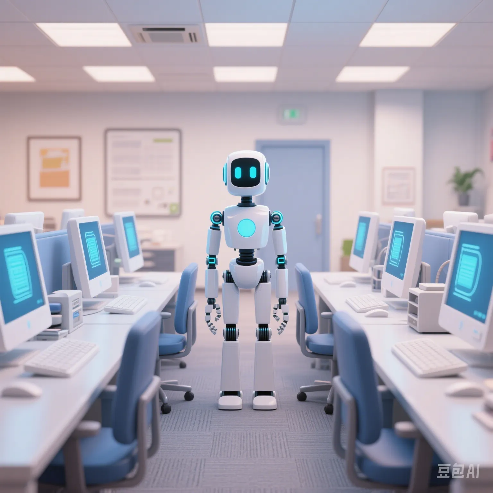

Will AI Take Our Jobs? How GPT - 5 Is Rewriting Workplace Rules
PeaceLove.Top Insights :2025-04-17
🧠 Here Comes GPT - 5. Can It Really Replace Humans?
The newly released GPT - 5 by OpenAI is no longer just capable of writing articles and code. It has evolved into an "all - around multimodal AI". It can view images, listen to audio, read video subtitles, and even understand the user's tone and context, truly achieving "full - channel" interaction. This technological evolution has shifted from a simple "tool" to a "colleague" or even a "competitor". 😮
In early 2025, technology companies such as Microsoft, Google, and Adobe successively integrated GPT - 5 into office systems, design software, and programming platforms. A designer sighed, "I wasn't replaced by AI, but I was outcompeted by those who can use AI." This is the reality. 💻
📉 Who Is Most at Risk? Who Benefits the Most?
AI won't "replace everything" equally. It has the greatest impact on:
- Repetitive jobs: Customer service, data entry, basic administration
- Tasks with clear logical processes: Basic programming, contract drafting, low - level writing
Relatively safe or even beneficial occupations include:
- Creativity and strategy - oriented positions: Brand planning, product design, user research
- People - and - emotion - intensive occupations: Psychological counseling, educational tutoring, social work
- AI collaborators: Prompt engineers, AI reviewers, data annotation trainers
💡 A Burst of New Skills: The Future Workplace Is about "AI Competence", Not Physical Exertion
GPT - 5 is changing not only the work content but also the skill structure. In the past, it was about "knowing Excel"; now, it's about "teaching AI to make tables". In the past, it was about "writing PPTs"; now, it's about "letting AI tell your story". 🧩
The new - type abilities most favored by enterprises include:
- Being able to collaborate with AI (Prompting + Reviewing + Re - creating)
- Understanding AI without writing code (comprehending its logic and knowing its boundaries)
- Quickly adapting to new tools (Notion AI, Canva Magic, Copilot, etc.)
⏳ The Future of the Human Workplace: Cooperation, Not Confrontation
The global labor market is being divided into three categories:
- AI - replaceable: These positions will rapidly decrease.
- AI - enhanced: Efficiency will be multiplied, but salaries may drop.
- AI - management: Talents who can control AI, formulate strategies, and integrate resources are the most scarce.
AI is not the end but the starting line for the next round of the ability competition. 🎯
Those who can quickly master AI will gain an advantage in the future workplace.
📍 In Conclusion: An Unemployment Wave or an Upgrade?
Every technological revolution eliminates some positions and creates new ones. Typists were replaced by Word, and bank tellers were replaced by ATMs, but we didn't experience a "huge unemployment wave"; instead, we upgraded.
AI won't take everyone's jobs, but it will definitely eliminate those who don't upgrade. 📉➡️📈
So, it's not about "whether AI will replace you" but "whether you will use AI to strengthen yourself".
Are you ready? 🧠💪